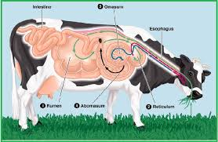

Pencernaan Ruminansia

Pola sistem pencernaan pada hewan memamah biak (ruminansia) umumnya sama dengan manusia, yaitu terdiri atas mulut, faring, esofagus, lambung, dan usus. Perbedaannya terletak pada susunan dan fungsi gigi serta lambungnya.
Susunan giginya terdiri atas:
Gigi seri ( incicivus) memiliki bentuk untuk menjepit makanan berupa tetumbuhan seperli rumput.
Geraham belakang ( molar) memiliki bentuk datar dan lebar.
Rahang yang dapat bergerak menyamping untuk menggiling makanan.
Lambung ruminansia terdiri atas 4 bagian, yaitu rumen, retikulum, omasum, dan abomasum dengan ukuran yang bervariasi sesuai dengan umur dan makanan alamiahnya. Kapasitas rumen 80%, retikulum 5%, omasum 7-8%, dan abomasum 7-8%. Pembagian ini terlihat dari bentuk gentingan pada saat otot spingter berkontraksi.
Makanan dari kerongkongan akan masuk rumen yang berfungsi sebagai gudang sementara bagi makanan yang tertelan. Di rumen terjadi pencernaan protein, polisakarida, dan fermentasi selulosa oleh enzim selulase yang dihasilkan oleh bakteri dan jenis protozoa tertentu. Dari rumen, makanan akan diteruskan ke retikulum dan di tempat ini makanan akan dibentuk menjadi gumpalan-gumpalan yang masih kasar disebut bolus. Bolus akan dimuntahkan kembali ke mulut untuk dimamah kedua kali. Dari mulut, makanan akan ditelan kembali untuk diteruskan ke omasum. Pada omasum terdapat kelenjar yang memproduksi enzim yang akan bercampur dengan bolus. Akhirnya bolus akan diteruskan ke abomasum, yaitu perut yang sebenarnya dan di tempat ini masih terjadi proses pencernaan bolus secara kimiawi oleh enzim.
Hewan seperti kuda, kelinci, dan marmut tidak mempunyai struktur lambung seperti pada sapi untuk fermentasi selulosa. Proses fermentasi atau pembusukan yang dilaksanakan oleh bakteri terjadi pada sekum yang banyak mengandung bakteri. Proses fermentasi pada sekum tidak seefektif fermentasi yang terjadi di lambung. Akibatnya kotoran kuda, kelinci, dan marmut lebih kasar karena proses pencernaan selulosa hanya terjadi satu kali, yakni pada sekum. Sedangkan pada sapi proses pencernaan terjadi dua kali, yakni pada lambung dan sekum yang kedua-duanya dilakukan oleh bakteri dan protozoa tertentu.
Pada kelinci dan marmut, kotoran yang telah keluar tubuh seringkali dimakan kembali. Kotoran yang belum tercerna tadi masih mengandung banyak zat makanan, yang akan dicernakan lagi oleh kelinci.
Sekum pada pemakan tumbuh-tumbuhan lebih besar dibandingkan dengan sekum karnivora. Hal itu disebabkan karena makanan herbivora bervolume besar, sedangkan pada karnivora volume makanan kecil dan pencernaan berlangsung dengan cepat.
Usus pada sapi sangat panjang, usus halusnya bisa mencapai 40 meter. Hal itu dipengaruhi oleh makanannya yang sebagian besar terdiri dari serat ( selulosa). Enzim selulase yang dihasilkan oleh bakteri ini tidak hanya berfungsi untuk merombak selulosa, tetapi juga dapat menghasilkan biogas yang berupa CH4 yang dapat digunakan sebagai sumber energi alternatif. Tidak tertutup kemungkinan bakteri yang ada di sekum akan keluar dari tubuh organisme bersama feses, sehingga di dalam feses (tinja) hewan yang mengandung bahan organik akan diuraikan dan dapat melepaskan gas CH4 (gas bio).